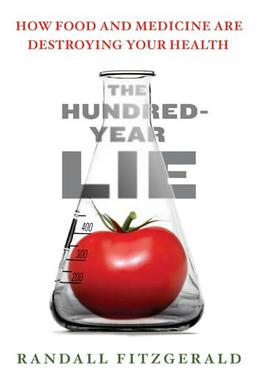

The Hundred Year Lie: How Food And Medicine Are Destroying Your Health (2006) is a book by investigative journalist
Randall Fitzgerald that examines the rise of the local and global influence of the United States food and chemical
industries, and argues that they have, over the last century, altered, affected and damaged the lives of millions of
people in the United States by introducing synthetic chemicals into the mainstream food chain.
Summary
The book covers a wide range of topics related to the central issue. It starts by describing the myths that the
public believes, that toxicity health issues are 'someone else's problem', and then goes on to talk about what is
known to the scientific and chemical communities, and charts the history of the cover-up of chemicals in relation to
human health, and the level of business made from this by the chemical companies.
The book then goes on in detail about the dangers of food additives, the toxic threats of the processed food humans and
animals currently eat, and how this chemical contamination has now affected the water that people drink, and how
this has brought on increased biological changes, genetic mutations and newly discovered and increasing illnesses
and diseases, in both human and animals.
The book ends with a discussion on Western and Eastern medical approaches and philosophies, a focus on alternative
medicine and eating healthily, avoiding synthetic foods, and a practical guide on how to detoxify one's body.

Author : Randall Fitzgerald
Language : English
Publishers Weekly
published date: 22 June 2006